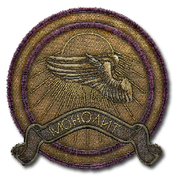
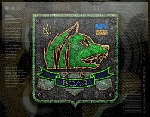

Мир S.T.A.L.K.E.R.
Остальные энергоблоки ЧАЭС продолжали работать, что открыло возможность создания комплекса секретных лабораторий с индексом «X» (икс). Группа учёных изучала гипотезу о ноосфере — информационной оболочке Земли. Ими был создан «генератор излучения Кайманова» — источник пси-излучения[2]. Побочным результатом исследований стало открытие способностей живых существ генерировать направленное пси-излучение[3]. В лаборатории X-16 был создан биологический излучатель (гигантский мозг)[4]. Проводилось облучение биологических образцов пси-полем разной интенсивности. В испытательных цехах проводились разработки новых видов вооружения, в частности «изделия № 62», функционирующего по принципу Гаусс-пушки.
Главной целью исследовательских работ был контроль над ноосферой. Появился проект «О-Сознание», его участники объединились в общую сеть, создав коллективный разум. Близ ЧАЭС были возведены Генераторы.
12 апреля 2006 года, в 14:33 эксперимент вышел из-под контроля — произошёл прорыв Ноосферы в материальный мир. Над территорией Зоны была отмечена вспышка света необычайной интенсивности, «и было видно, как в небе испаряются облака». Потом «пришёл страшный грохот, содрогнулась земля». «Энергия ноосферы» с этого момента значительно изменила физические законы, а также флору и фауну указанной территории. Через сутки войска полностью оцепили «Зону» по периметру, однако внутри периметра осталось ещё много людей. Спасательные операции были отменены из-за высокой аномальной активности. Размеры Зоны были нестабильны и скачкообразно увеличивались, поглощая военный периметр раз за разом[5].
2007-2008 годы. Зона продолжает расти. Причина катастрофы ещё не установлена. Жертв трагедии всё больше. Редкие научные экспедиции заканчиваются неудачами. Становится известно о фантастических аномальных образованиях и мутировавших видах живых существ, обладающих удивительными способностями.
2009 год. На территории Зоны по разным оценкам присутствуют от одной до трёх сотен «неучтённых лиц», называющих себя «сталкерами». Они занимаются поиском так называемых артефактов — аномальных образований с определёнными свойствами, имеющих высокую цену. Многие сталкеры начинают объединяться в группы, создавая основу для крупных сталкерских кланов.
2010 год. Вслед за сталкерами-одиночками за исследование Зоны принимаются учёные. Организуются экспедиции, появляются мобильные лаборатории внутри Периметра. Несмотря на военный контроль, сталкерство принимает всё больший размах. Центр Зоны всё ещё остаётся недостижимой целью, путь закрывает «Выжигатель мозгов» — неизвестное пока явление, действие которого концентрируется в районе леса к северу от «Армейских складов». Попадая в поле действия «выжигателя» человек теряет рассудок, превращаясь в зомби, либо умирает. Позже выясняется, что «Выжигатель» — экспериментальная модель «излучателя Кайманова», который члены «О-сознания» переоборудовали в систему защиты от проникновения в центр Зоны. Известный путь туда охраняют военные, сдерживая волны мутантов. Этот последний рубеж получил название Барьер. Однако каждый сталкер мечтает беспрепятственно пройти за него, ходят слухи о нетронутых территориях — «Клондайке» артефактов, появляются легенды об Исполнителе желаний — кристалле внеземного происхождения, находящегося на ЧАЭС и якобы ставшего причиной образования Зоны.

Группировка, скорее напоминающая религиозную секту. Её члены верят, что в центре Зоны покоится эволюционный кристалл – Монолит — неземного происхождения. Большинство сталкеров презирают адептов «Монолита», считая их помешанными. Со времени своего образования группа препятствует продвижению сталкеров к центру Зоны, мотивируя это недобрыми намерениями последних в отношении Монолита. По слухам, у «монолитовцев» есть крупная база где-то ближе к центру Зоны, но точного её расположения не знает никто, кроме самих членов группировки.


Анархисты и сорвиголовы, объявившие себя борцами за свободу на территории Зоны, и поэтому постоянно конфликтующие с армейскими подразделениями, военными сталкерами и группировкой «Долг». «Свободовцы» считают, что информацию о происходящем в Зоне нельзя скрывать от человечества, таким образом оспаривая монополию правительственных организаций на владение здешними тайнами и чудесами.


АрмияСолдаты регулярных армейских частей, охраняют подходы к закрытой территории Зоны патрулируя периметр, расстреливая мутантов и отлавливая мародёров. Армейский спецназ — элитные подразделения. Как правило, высаживаются в Зоне для проведения спасательных и специальных операций.
Военные сталкерыСолдаты, прошедшие после опыта службы в Зоне специальную подготовку, или сталкеры, подписавшие контракт с армией. Обычно снабжаются большим количеством вспомогательной аппаратуры и хорошо вооружены. В основном используются для изучения причин и последствий катастрофы, а также занимаются картографированием Зоны. Могут ходить как поодиночке, так и группами до пяти человек. Обычных сталкеров к себе не подпускают — сразу же открывают огонь.


Я его раньше изредка видел в исследовательском лагере — бывало, сдавал хабар. Нормальный был мужик. Здоровый, накачанный — и не скажешь, что из яйцеголовых. Цену хорошую за артефакты давал, за жизнь с ним поговорить всегда можно было... а так нелепо вляпался. Возле «карусели» чего-то там со своими приборами возился, когда эти шакалы стрелять начали. Его швырнуло в аномалию, раскрутило. Когда мы бой закончили, только ошмётки его скафандра возле «карусели» и остались.

Трамплин. Одна из первых зафиксированных аномалий. Наносит ударные повреждения переменным гравитационным полем. На одном месте находится в среднем неделю, в течение «жизни» меняя силу воздействия. Результат встречи с «трамплином» может быть разным — от небольших синяков и ушибов до мгновенной смерти. В дневное время достаточно легко обнаруживается по искажениям воздуха над ней, кружащейся листве, а также характерным пятнам на земле красно-бурого цвета. Фиксируется любыми видами детекторов, а также с помощью подброшенных в неё различных предметов. Образует три вида артефактов: «Медузу», «Каменный цветок» и «Ночную звезду».

Воронка. Аномалия предположительно гравитационной природы. В момент активизации со страшной силой втягивает в себя всё, что находится в радиусе десяти-пятнадцати метров. При попадании в центр «воронки» шансов выжить нет: тело и животного, и человека будет сжато в плотный комок, а затем разорвано в момент так называемой разрядки. Аномалия не меняет места своего проявления; может быть визуально обнаружена днём по характерному движению воздуха над ней, кружащейся листве, фрагментам расчленённых трупов и характерному тёмному пятну на земле в центре. Ночью крайне опасна, поскольку обнаруживается лишь детекторами или с помощью бросания металлических предметов. Образует три вида артефактов: «Выверт», «Грави» и «Золотую рыбку».

Карусель. Название обусловлено эффектом поднятия в воздух любого живого существа с последующей раскруткой до огромной скорости. Природа «Карусели» пока не исследована до конца. Обнаруживается по лёгкому пылевому вихрю и разбросанным фрагментам тел вокруг. Очень важно не упустить момент начала втягивания в аномальный вихрь и не попасть в зону максимально сильного эффекта в центре — только тогда есть шанс отделаться минимальными травмами. Образует три вида артефактов: «Кровь камня», «Ломоть мяса» и «Душу».
Лифт. Безвредная для здоровья гравитационная аномалия, позволяющая на некоторое время забыть о законах тяготения. В локальном объёме диаметром в несколько метров земное притяжение значительно снижено. Образует артефакт «Плёнка».

Жарка. В неактивном состоянии выглядит как едва видимое облако горячего воздуха, однако при попадании в зону действия любого предмета или живого существа образует компактную зону, разогретую до температуры около 1500К. Ночью может быть обнаружена только мощными детекторами или с помощью бросания металлических предметов. Образует шесть видов артефактов: «Капли», «Огненный шар», «Кристалл», «Глаз», «Мамины бусы» и «Пламя».
Пар. Аномалия представляет собой струи раскалённого бело-голубого пара, вырывающиеся из земли. Наряду с «жарками» и «кометами» относится к термическим аномалиям. Сталкеры говорят, что это «жарки», появившиеся под водой.

Комета. Я лично наблюдал только «Комету» и «Теслу». Первая — огненный шар около метра в диаметре. Жар от нее чувствуется и на большем расстоянии, могу уверить. Вторая — то, что можно описать словами «шаровая молния». Безусловно, шар, и, безусловно, электрической природы... Обе аномалии активно передвигаются, но как правило - по замкнутым траекториям. Внимательный сталкер без труда может пройти мимо них. Главное — не отвлекаться.
Электра. Аномальное образование диаметром около 10 метров, накапливающее статическое электричество. Потревоженная аномалия взрывается десятком мини-молний, причём поражение током для любого живого существа почти всегда смертельно. Характерной особенностью «электры» является видимый над ней днём голубоватый свет. Ночью легко обнаруживается любыми видами детекторов или с помощью бросания металлических предметов. Образует шесть видов артефактов: «Бенгальский огонь», «Вспышка», «Лунный свет», «Батарейка», «Пустышка» и «Снежинка»

Тесла. Я лично наблюдал только «Комету» и «Теслу». Первая — огненный шар около метра в диаметре. Жар от нее чувствуется и на большем расстоянии, могу уверить. Вторая — то, что можно описать словами «шаровая молния». Безусловно, шар, и, безусловно, электрической природы... Обе аномалии активно передвигаются, но как правило — по замкнутым траекториям. Внимательный сталкер без труда может пройти мимо них. Главное — не отвлекаться.
Мясорубка.Электромагнитная аномалия. Обнаруживалась как при помощи детектора, так и визуально: внешне выглядела, как колышущееся марево. При попадании в неё живого существа разряжалась, поражая жертву электрическим разрядом. После разряда полностью безвредна, пока не накопится очередной заряд.

Кисель. Образование не ясной до конца природы. При контакте с телом наносит травмы, сходные с эффектом воздействия сильной кислоты. Образуют три вида артефактов: «Слизь», «Слизняка», «Слюду».

Газировка. Аномалия, которую сложно заметить издалека, однако при приближении к ней человек перестает различать все цвета, кроме зелёного.

Кислотный туман. Дымчатое плотное скопление кислотных газов, малозаметное днём и отчётливо проявляющееся ночью. Издалека напоминает низкостелящийся радиационный туман, из которого вертикально выбрасываются снопы искр. При непосредственном контакте вызывает сильные химические ожоги. Аномалия тесно связанна с заболоченной местностью, и, как правило, формирует артефакты органического происхождения.

Химическая комета. Подвижная аномалия, встречающаяся всего в одном экземпляре. Скорее всего является подвидом «кометы». Встречается только в S.T.A.L.K.E.R.: Зов Припяти.

Жгучий пух. Антенны вот только подвели — обросли какими-то волосами наподобие мочала. Очкарики наши на эти антенны давно уже зубы точат: интересно, видите ли, им посмотреть, что это за мочало, нигде такого больше нет, только в Чумном квартале и только на антеннах. А главное, тут же, рядом ведь, под самыми окнами. В прошлом году догадались: спустили с вертолёта якорь на стальном тросе, зацепили одну мочалку. Только он потянул, вдруг — пш-ш-ш! Смотрим: от антенны дым, от якоря дым, и сам трос уже дымится, да не просто дымится, а с ядовитым таким шипением, вроде как гремучая змея. Ну, пилот, даром что лейтенант, быстро сообразил, что к чему, трос выбросил и сам деру дал... Вон он, этот трос, висит, до самой земли почти свисает и весь мочалом оброс...
Ржавые волосы. Звуковой и визуальный детектор на аномалию не реагирует. Материал «ржавых волос» при касании наносит термические ожоги. При касании игрока или персонажа, тело в месте касания дымится, как от воздействия кислоты. Персонаж или игрок кричит и отыгрывает анимацию ранения. Звук действия аномалии на игрока. Тип повреждения — ожог. Вариант визуализации: отмоделированные скопления «ржавых волос» покачиваясь висят на постройках и мёртвых деревьях.

Пространственный пузырь. «Пузырь», брат, — это одна из самых хреновых хреновин, которых раньше не бывало в Зоне. Если ты в него попал, ты попал по-взрослому! Куда бы ты ни пёр, а с места не сдвинешься. Я раньше и не слыхал о таком... а вот довелось самому хлебнуть. Нас выброс накрыл, мы дружным скопом в эту фигню и угодили. Cтолько дней по кругу ходили! Кое-кто из ребят дал слабину, уже стреляться хотел. Ну а чего, когда выхода всё нет, так зачем, мол, мучиться? У некоторых на нервной почве галюны пошли. Не знаю... как-то я всех пинками и поднял...

Телепорт. Одна из немногих безвредных аномалий, обладает свойством мгновенно перемещать материю, порой на значительные расстояния. Массово встречается исключительно на ЧАЭС, хотя некоторые одиночные телепорты могут находиться и на других локациях.
Митька, говорят, совсем свихнулся после того, как вернулся с Янтарного озера. Неужто под воздействие контролёра попал? — Нет, тот бы его так просто не отпустил. Там что-то другое...
Ужас охотника! Одна из самых глупых ошибок, которую можно сделать в жизни, — это недооценить зверьков из-за маленького размера. Тушканы безумно быстрые и юркие и притом всегда перемещаются большими стаями. Как начнут тебя по маленькому кусочку растягивать в разные стороны, мигом прозреешь! Главное, чтобы уже слишком поздно не оказалось. Тут, понимаешь, самое неприятное что? По тушкану попасть очень трудно. Я потому и советую всем сталкерам на такой случай всегда иметь при себе дробовик с запасом патронов...
Со времён первой катастрофы в собачьем роду сменилось уже несколько поколений, и в каждом из них всё более наблюдалось влияние Зоны. Мутации и эволюционная адаптация привели к усилению прежде слабо выраженных собачьих способностей, причём зачастую в ущерб привычным. Основные физиологические изменения коснулись зрения — оно оказалось почти бесполезным после стремительного усиления чутья: например, слепые щенки выживали в Зоне не хуже, а то и лучше своих зрячих собратьев. В результате обычные собаки вскоре выродились здесь полностью, уступив место новому виду — слепым псам. Данные животные прекрасно распознают и обходят аномалии, радиацию и другие невидимые опасности, которыми кишит Зона. Как и их предки, слепые псы охотятся стаями; встреча с большой группой этих существ означает серьёзную опасность даже для хорошо вооруженного сталкера
...Если на месте одной вдруг появляется целая стая, помни: те, что атакуют тебя - фантомы. Настоящая псевдособака будет держаться подальше, лишь изредка подбегая, чтобы укусить. Поэтому постарайся побыстрее вычислить ее. Как только умрет настоящая, все фантомы сразу исчезнут.
Полулегендарный монстр — матёрые сталкеры описывают его как высокого сутулого гуманоида со множеством щупалец на месте рта. По их словам, с помощью щупалец данное существо питается: впиваясь ими в шею живой жертвы, оно парализует свою добычу и высасывает её кровь; после такой процедуры от человека остаётся лишь высохшая, напоминающая мумию оболочка. Наиболее удивительное в кровососе — его способность становиться невидимым. Судя по всему, именно эти создания ответственны за смерть большого количества сталкеров. Мало кто из очевидцев остался в живых — и, судя по рассказам этих счастливчиков, для обитания кровососы предпочитают сырые места вроде болот и подземелий.
Эти существа, судя по всему, некогда были людьми, хотя сложно представить, какие условия могут довести человека до подобного состояния. Снорки — это сумасшедшие, ведущие совершенно животный образ жизни создания, по сути своей слабо отличающиеся от хищных монстров Зоны. Передвигаются они на четырёх конечностях, подпрыгивая над землёй и постоянно нюхая её, чтобы уловить запах жертвы. Охотятся осторожно и расчётливо, подстерегая сталкеров подобно хищным животным. Молниеносные рефлексы и гипертрофированные мышцы позволяют сноркам совершать длинные точные прыжки и за несколько секунд разрывать жертву в клочья. На некоторых особях сохранились детали армейской униформы или отдельные детали экипировки, что позволяет предположить в них пропавших без вести военных или сталкеров.
Оказавшиеся в Зоне домашние свиньи, как и многие другие живые организмы, подверглись сильной мутации. Поскольку были затронуты гены, контролирующие процессы метаболизма, фенотип животного резко изменился. Мутировавшая свинья, которую сталкеры называют «плотью» — один из самых наглядных примеров надругательства Зоны над природой. У этих существ сформировался чешуйчато-костный защитный покров, значительно увеличилась способность организма к регенерации, усложнилась нервная система. Как и обычная свинья, «плоть» всеядна, поэтому, будучи голодной, вполне может напасть на сталкера.
Крупный зверь, достигающий полутора метров в холке. Своей живучестью и агрессивностью данное животное превосходит своих родственников вне Зоны и не уступает большинству мутантов. Мутагенные процессы, обусловленные воздействием радиации и аномалий, в значительной степени сказались на облике этих млекопитающих: местами последние облысели, а местами, наоборот, обросли очень длинной жёсткой шерстью. Копыта зверей изменили свою форму и стали более острыми, приобретя некоторое сходство с когтями; зрачки обесцветились, на облысевшей голове проявились пигментационные пятна и глубокие морщины. Кабаны Зоны хорошо переносят радиацию, что позволяет им подолгу находиться на сильно загрязнённых территориях. Обычно эти животные атакуют с разбега, пытаясь клыками распороть живот жертвы или сбить её с ног.
Баюн — существо кошачьего семейства, которое имитирует любые голоса и таким образом заманивает жертв, либо отпугивает преследователей. Увидев человека, нападет не обязательно — может просто отманить в заросли и свалить. Мутировал из обычной кошки.

Очень опасные хищники. Ночные. Заходят в темноте тебе за спину - и прыгают. Если знаешь, что рядом химера, крути головой на триста шестьдесят и спину друзьям прикрывать не забывай.
Огромная туша, состоящая из каплеобразного туловища и пары гипертрофированных конечностей — вот что такое псевдогигант. Руконоги используются данным существом для передвижения и хватания жертвы. Взрослая особь достигает веса в две тонны при росте около двух метров. Внешняя неуклюжесть очень обманчива — псевдогиганты стремительны в движениях, их мышцы обладают просто поразительной мощью, а кости в прочности не уступают металлу. Головной мозг защищён толстейшим — около 100 миллиметров! — черепом, кроме того, многие сложные функции выполняет спинной мозг. Поразительно также умение псевдогигантов формировать на поверхности земли локальные ударные волны, поражающие в ограниченном радиусе всё живое.
Я впервые бил карлика из своей пневматики и был приятно удивлен, разглядывая застывший в последней судороге комок мышц, в которое монстр превратился под воздействием яда из иглы. После такого попадания он при всем желании уже не смог бы нам навредить. А ведь бывали случаи, когда такой вот малыш, расстрелянный перед этим из «калаша», последним приветом успевал отправить к праотцам пару-тройку человек. Тело карлика, точнее то, что от него осталось, необходимо было сжечь. Иначе через сутки какая-то часть монстра прорастет в земле, а еще через двое, поднимется над этим местом рыхлый холмик и вылезет из него контроллер. А может и не контроллер вовсе, а только нечто очень похожее на контроллера.
Редкий мутант, встречающийся близко к центру Зоны. Внешне напоминает гуманоида с непропорционально увеличенной головой. Обладает развитым восприятием, а также способностью контролировать поведение менее развитых живых существ. Матёрые особи способны брать под контроль даже людей. Это опасный противник, встречи с которым боятся даже самые опытные сталкеры.
Выглядит как бродяга или горбатый старичок в разодранной одежде, хотя на самом деле он почти двухметрового роста. Скрывает свою огромную мутировавшую левую руку под плащом. Сильный удар по спине может парализовать жертву.
Поистине сверхъестественные невидимые существа, встречающиеся только в глубине Зоны, обитают, как правило, внутри полуразрушенных зданий. О происхождении ничего достоверно не известно; бытует легенда, что это духи сталкеров, попавших под мощный выброс. Механизм проявления этих невидимок действительно соответствуют легендам о полтергейсте (откуда и название) и отличается разнообразием: от периодического воя и смеха до появляющихся из ниоткуда опасных огненных шаров. К сожалению, все сведения об этом явлении черпаются из невнятных и довольно противоречивых рассказов, правдивость которых вызывает сомнение.
Воздействие Выжигателя мозгов полностью разрушает структуру личности, оставляя только телесную оболочку. Побродив немного по Зоне, лишённые разума тела начинают превращаться в настоящих зомби. Из рефлексов у них остаются лишь самые примитивные, оружие и одежда скоро приходят в негодность. В результате зомби представляют собой не что иное, как медлительные полутрупы, для которых наличествуют лишь два эффективных раздражителя: еда и сон. Зомби совершенно неразборчивы в выборе пищи и питья, поэтому их тела буквально пропитаны радиацией и токсинами. Как правило, эти существа бесцельно бродят по Зоне или, словно трупы, валяются внутри заброшенных построек. Однако лишь только зомби почует близкое присутствие живого человека, он сразу же пытается атаковать. Умудрённые опытом сталкеры стараются обходить эти неуклюжие опустошённые оболочки.